Welcome to the recipes section. Here you can find cookies of all different types and for different occasions to suit you. We feature other websites as well. If you have not already, make sure to read some tips before getting started. Have fun!
These cookie doughs are prepared ahead of time and can be placed in your fridge for quite some time until you’d like to bake them. Only a few minutes and you’ve got yourself a batch of cookies.
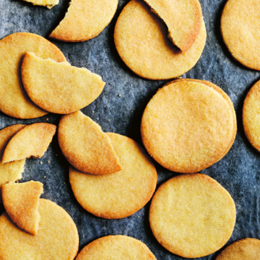Vanilla Snaps: Your everyday simple cookie -- a great recipe for beginners.
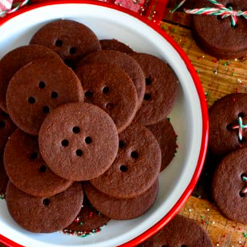Cocoa Buttons: Sweet and cute cookie with a coffee taste.
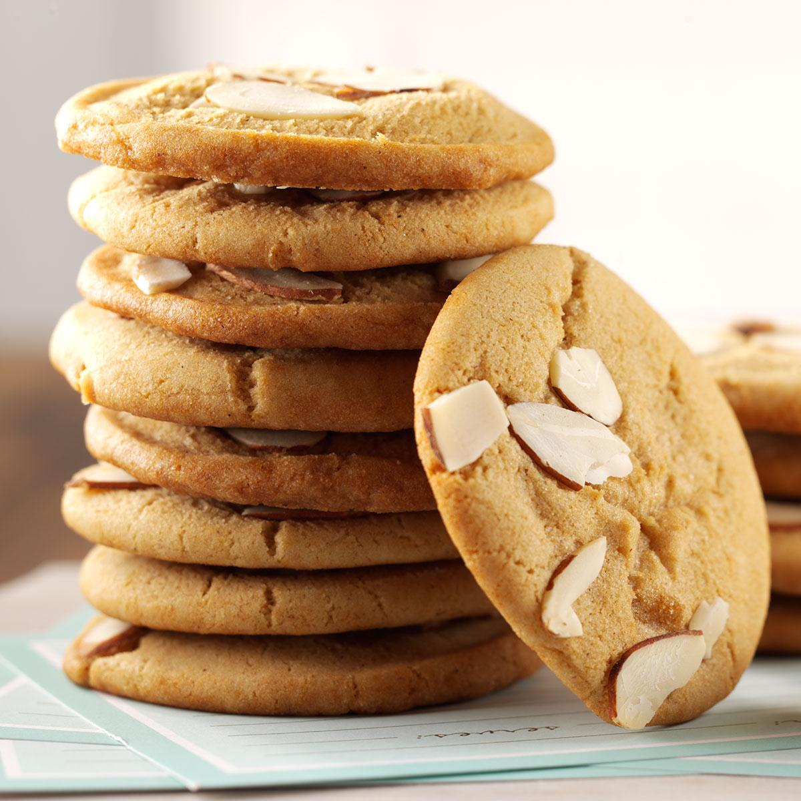Mixed-nut Cookies: Crunchy and...nutty? *nut allergies
These cookies are great if you are trying to whip up something quickly. They don't require many hard to come across ingredients or much time either. Here are some recommended recipes you need to try. They are from Epicurious and BellyFull; links lead to their website.
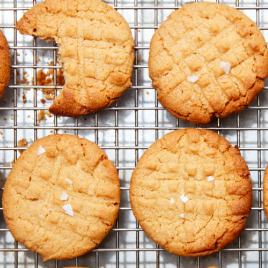Epicurious: 3-Ingredient Peanut Butter Cookies
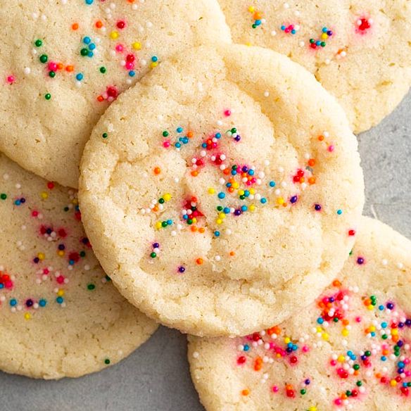Bellyfull: 3-Ingredient Sugar Cookies
Some of the most well-known and widely enjoyed cookies. The macarons recipe is from Tastyco.
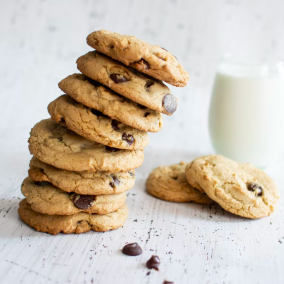Chocolate Chip Cookies: A classic, can't go wrong with these.
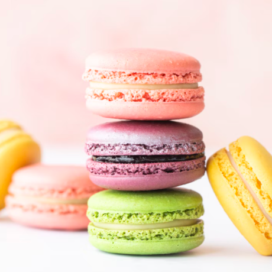Healthy and delicious. These recipes are great and some more must-tries. They are from Wellplated and Cookie and Kate; links lead to their website.
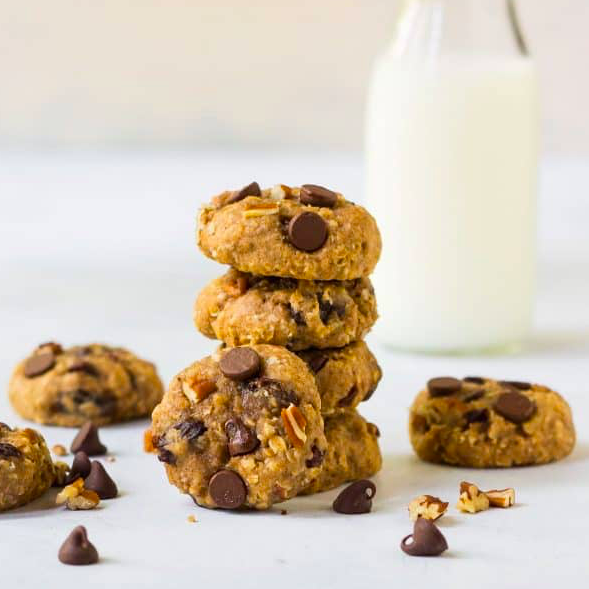Wellplated: Healthy Oatmeal Cookies
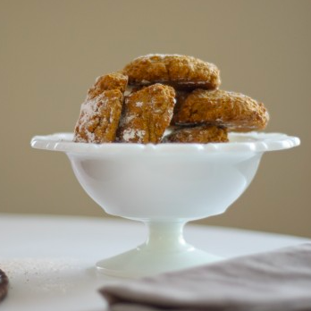Cookie and Kate: Whole Wheat Pumpkin Cookies
As the holiday comes, so does the time of giving and sharing. These cookies are perfect for a holiday snack with your family or a gift to your closest friends.
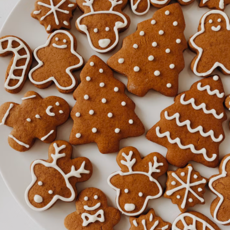Gingerbread Cookies: Fun to decorate and even more fun to eat.
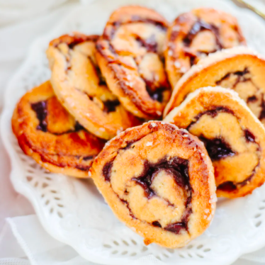Mini Raspberry Pinwheels: The jam goes perfectly with the pastry.
photo credits: 1. donna hay. vanilla snap bisuit. photo retrieved 2022-02-16 from https://www.donnahay.com.au/recipes/for-the-kids/lunchboxes/vanilla-snap-biscuits 2. lord bydron’s kitchen. spiced chocolate shortbread buttons. photo retrieved 2022-02-16 from https://www.lordbyronskitchen.com/spiced-chocolate-shortbread-buttons/ 3. taste of home. chewy almond cookies. photo retrieved 2022-02-16 from https://www.tasteofhome.com/recipes/chewy-almond-cookies/ 4. epicurious. 3-ingredient peanut butter cookies. photo retrieved 2022-02-17 from https://www.epicurious.com/recipes/food/views/3-ingredient-peanut-butter-cookies 5. bellyfull. sugar cookies. photo retrieved 2022-02-17 from https://bellyfull.net/easy-sugar-cookie-recipe/ 6. wellplated. healthy oatmeal cookies. photo retrieved 2022-02-18 from https://www.wellplated.com/healthy-oatmeal-cookies/ 7. cookieandkate. pumpkin cookies. photo retrieved 2022-02-18 from https://cookieandkate.com/pumpkin-cookie-recipe/ 8. sweetliza. pinwheel cookies. photo retrieved 2022-02-18 from https://www.sweetliza.com/healthy-pinwheel-cookies/